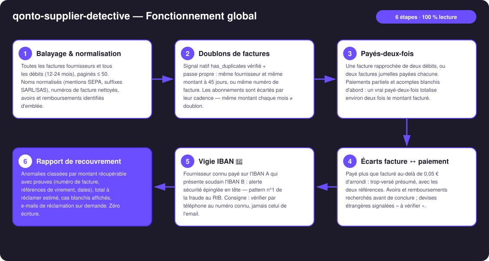
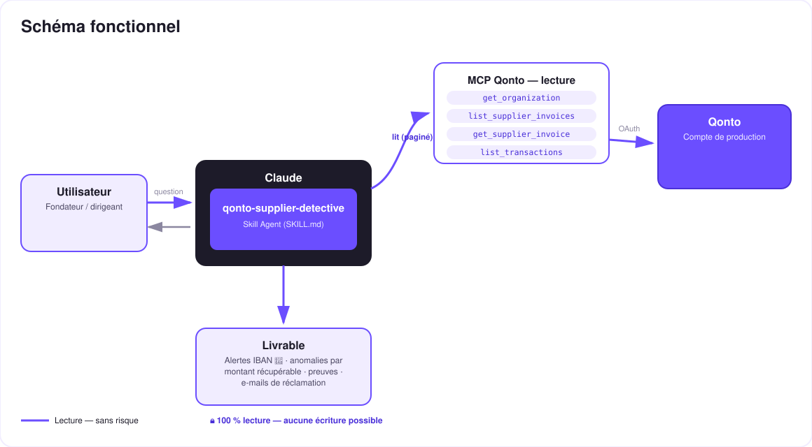

Le détective des factures fournisseurs — doublons, payés-deux-fois, écarts et changements d'IBAN, preuves à l'appui.
En PME, une fraction des paiements fournisseurs sont des erreurs — doublons, payés-deux-fois, trop-versés — et personne ne va jamais les chercher. Le skill balaie toutes les factures fournisseurs et tous les débits, et traque 4 anomalies :
Même fournisseur + même montant à quelques jours, ou même n° de facture ; signal natif has_duplicates vérifié. Abonnements écartés par détection de cadence.
1 facture, 2 débits : le signal qui rapporte. Paiements partiels et acomptes reconnus légitimes — un vrai payé-deux-fois totalise ≈ 2× la facture.
Payé plus que facturé au-delà de l'arrondi ; avoirs et remboursements vérifiés avant de conclure, devises signalées « à vérifier ».
Un fournisseur connu qui change d'IBAN = alerte sécurité en tête de rapport — pattern n°1 de la fraude au RIB. Consigne : vérifier par téléphone au numéro connu.
| Prérequis | Détail | Obligatoire |
|---|---|---|
| Compte Qonto production | Le skill s'adapte à toute organisation — get_organization d'abord, zéro donnée en dur | ✅ |
| Pays | Aucune règle nationale requise : les détecteurs comparent le compte à lui-même. Tous les pays Qonto (FR, DE, ES, IT, AT, NL, BE, PT) | ℹ️ détecté |
| MCP Qonto connecté | Connecteur officiel (claude.ai / Claude Desktop), login OAuth | ✅ |
| Factures fournisseurs importées | Plus il y en a, plus la surface de détection est grande. Sans elles : passe « transactions seules », annoncée clairement | ⭕ recommandé |
| Historique ≥ 6 mois | En dessous : cadences d'abonnements et suivi d'IBAN moins fiables — le skill le dit | ⭕ |

emitted_at (décalage de 1-2 j sur settled_at) · filtres de statut non exposés côté MCP → filtrage côté client sur status
100 % lecture — le détective ne touche à rien, il te donne le dossier. Aucun outil d'écriture Qonto n'est appelé, jamais : rien à approuver, rien d'exécuté. Et face à un changement d'IBAN, la consigne est toujours la même : vérifier par téléphone au numéro déjà connu — jamais celui de l'email qui annonce le changement.
| Détecteur | Ce qu'il cherche | Le faux positif écarté |
|---|---|---|
| D1 · Doublons | Même fournisseur + même montant à 45 j, ou même n° de facture ; has_duplicates natif | Abonnements : même montant chaque mois à cadence régulière = récurrence, pas doublon |
| D2 · Payés-deux-fois | 1 facture ↔ 2+ débits ; deux factures jumelles payées chacune | Partiels / acomptes : les débits totalisent la facture (≠ 2×) ; remboursement reçu = cas clos |
| D3 · Écarts | Payé > facturé au-delà de 0,05 € d'arrondi | Avoirs expliquant l'écart ; devises étrangères → « à vérifier (change) » |
| D4 · Vigie IBAN 🚨 | Fournisseur connu payé sur IBAN A → soudain IBAN B | Changement de banque légitime : l'alerte demande une vérification, elle n'accuse pas — mais toujours avant le prochain paiement |
| Sortie | Format | Quand |
|---|---|---|
| Réponse dans la conversation | Rapport markdown : alertes IBAN 🚨 en tête, anomalies triées par montant récupérable, total estimé, cas blanchis | Toujours — c'est la base |
| Dossier interactif | Fichier/artifact HTML : tableau des anomalies, cartes de preuves, jauge du récupérable, bandeau alerte IBAN | Si l'hôte affiche les fichiers (artifacts claude.ai, Claude Desktop, Claude Code) ; repli automatique sur le markdown sinon |
| E-mail de réclamation | Brouillon prêt à envoyer : n° de facture, les 2 références de virement, dates, montant — IBAN masqués | Sur demande, anomalie par anomalie |
La démo ≤ 3 min jointe à la PR suit le storyboard : problème → balayage (le volume à l'écran) → dossier d'anomalies + alerte IBAN → le payé-deux-fois chiffré avec son e-mail de réclamation prêt à envoyer → wrap-up 100 % lecture. Tournée en live sur un compte de production réel.
| Idée | Effort | Note |
|---|---|---|
| Envoi de la réclamation via un MCP Gmail détecté dynamiquement | Faible | Multi-MCP optionnel — le cœur reste Qonto pur |
Marquage des factures litigieuses (change_supplier_invoice_status) | Moyen | Sortirait du 100 % lecture — option explicite à assumer |
| Détection post-résiliation : un abonnement qui continue après une résiliation annoncée | Moyen | Réutilise la détection de cadence |
| Audit périodique programmé avec diff vs le rapport précédent | Faible | La vigie IBAN devient un vrai monitoring |
| Rapprochement multi-devises avec taux du jour | Moyen | Transforme les « à vérifier (change) » en verdicts |